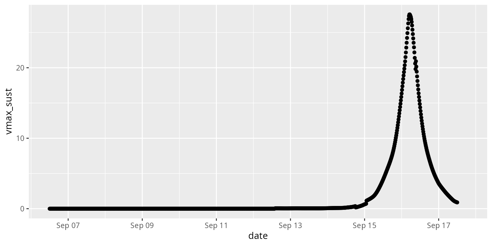
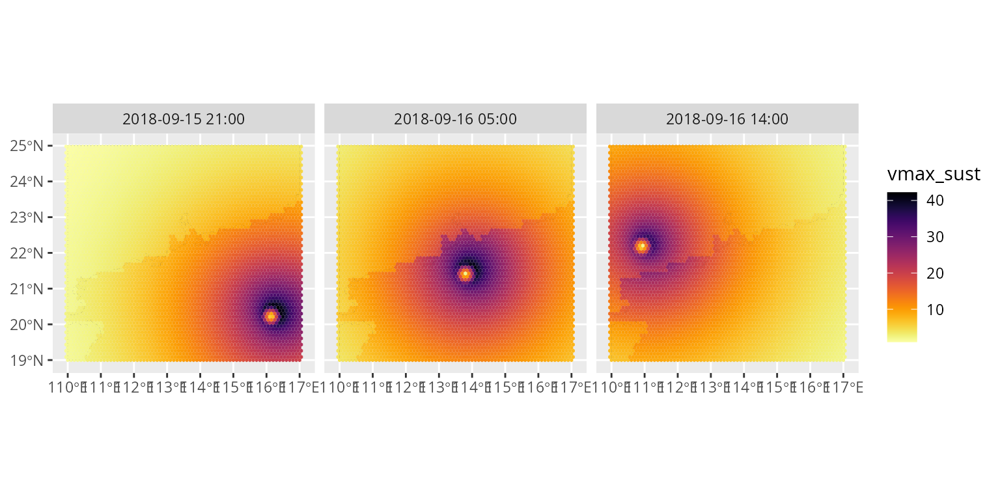

Extracting snapshots of the wind field at different times
Source:vignettes/timepoints.Rmd
timepoints.Rmd
library(stormwindmodel)
library(rnaturalearth)
library(sf)
library(tidyverse)
library(lubridate)
library(viridis)In the other vignettes, we have focused on how to create summaries of how severe the peak winds or wind gusts were at any point over the course of a storm for a certain location. In the course of modeling these storm-long values, the model estimates winds at a number of time points over the course of the storm. This vignette describes how you can extract and use those values to look at snapshots of the modeled wind field at specific times during the storm.
This example will use the Typhoon Mangkhut from 2018. The tracks for this storm are included as an example dataset in this package. We have described how to set up these data for the model, as well as how to create a set of grid points to model to, in another vignette for this package (“Modeling winds outside the United States”). We have repeated the code here, but please check the other vignette for more details on the process:
data("mangkhut_tracks")
all_countries <- ne_countries(scale = "medium",
returnclass = "sf")
near_landfall <- all_countries %>%
st_make_valid() %>%
st_crop(y = st_bbox(c(xmin = 110, xmax = 117, ymin = 19, ymax = 25)))
#> Warning: attribute variables are assumed to be spatially constant throughout
#> all geometries
grid_near_landfall <- near_landfall %>%
st_make_grid(what = "polygons", square = FALSE, cellsize = 0.1) %>%
st_sf() %>%
mutate(gridid = as.character(1:n()))
points_near_landfall <- near_landfall %>%
st_make_grid(what = "centers", square = FALSE, cellsize = 0.1) %>%
st_sf() %>%
mutate(gridid = as.character(1:n()))
points_to_model <- points_near_landfall %>%
mutate(glon = sf::st_coordinates(.)[,1],
glat = sf::st_coordinates(.)[,2]) %>%
st_drop_geometry() %>%
mutate(gridid = gridid,
glandsea = mapply(check_over_land, tclat = .$glat, tclon = .$glon))
mangkhut_to_model <- mangkhut_tracks %>%
transmute(date = format(iso_time, format = "%Y%m%d%H%M"),
latitude = as.numeric(lat),
longitude = as.numeric(lon),
wind = as.numeric(usa_wind))Next, we can use these inputs to model the wind field during the
storm. To generate output that includes the values for each of the
timepoints that were modeled, you can use the ... function
from the package:
mangkhut_winds <- calc_grid_winds(hurr_track = mangkhut_to_model,
grid_df = points_to_model)
#> Warning in weathermetrics::convert_wind_speed(hurr_track$vmax, "knots", : Some
#> of the observations in the data gave negative wind speeds. Since wind speed
#> cannot have a negative value, these observations were set to 'NA'.
#> Warning in knots_to_speed(wind_speed, unit = new_metric, round = round): Some
#> of the observations in the data gave negative wind speeds. Since wind speed
#> cannot have a negative value, these observations were set to 'NA'.The output from this function is a list, each of which contains a
matrix. The modeled winds are included in the element of the list named
vmax_sust. Here is a section pulled from the middle of this
matrix:
mangkhut_winds$vmax_sust[900:910, 2500:2505]
#> 2500 2501 2502 2503 2504 2505
#> 2018-09-15 20:45:00 10.31024 10.00689 9.676399 9.324705 8.957472 8.579940
#> 2018-09-15 21:00:00 10.65742 10.34744 10.008068 9.645680 9.266362 8.875745
#> 2018-09-15 21:15:00 11.02392 10.70674 10.357711 9.983692 9.591240 9.186426
#> 2018-09-15 21:30:00 11.40499 11.08035 10.721195 10.334903 9.928559 9.508718
#> 2018-09-15 21:45:00 11.80079 11.46845 11.098676 10.699446 10.278417 9.842677
#> 2018-09-15 22:00:00 12.21143 11.87116 11.490285 11.077421 10.640872 10.188320
#> 2018-09-15 22:15:00 12.63702 12.28861 11.896114 11.468890 11.015947 10.545622
#> 2018-09-15 22:30:00 13.07761 12.72085 12.316216 11.873868 11.403608 10.914498
#> 2018-09-15 22:45:00 13.53313 13.16785 12.750568 12.292314 11.803783 11.294843
#> 2018-09-15 23:00:00 14.00373 13.62975 13.199223 12.724197 12.216351 11.686444
#> 2018-09-15 23:15:00 14.48909 14.10627 13.661957 13.169295 12.641073 12.089046You can see that each row gives data for a specific time, while each column gives data for a specific grid point.
You can use this matrix in a couple of ways. First, if you’d like to get a time series of the modeled winds at a certain location over the course of a storm, you can do that. For example, we could create the time series of modeled winds in Hong Kong for this storm. The latitude and longitude of Hong Kong are 22.32 degrees North and 114.17 degrees East.
points_to_model %>%
mutate(dist_hk_lat = abs(glat - 22.32),
dist_hk_lon = abs(glon - 114.17)) %>%
filter((dist_hk_lat + dist_hk_lon) ==
min(dist_hk_lat + dist_hk_lon))
#> gridid glon glat glandsea dist_hk_lat dist_hk_lon
#> 1 2995 114.2 22.2909 FALSE 0.02910347 0.03
points_to_model %>%
filter(gridid == "2995")
#> gridid glon glat glandsea
#> 1 2995 114.2 22.2909 FALSE
hk_winds <- mangkhut_winds$vmax_sust[ , "2995"] %>%
enframe(name = "date", value = "vmax_sust") %>%
mutate(date = ymd_hms(date))
hk_winds
#> # A tibble: 1,081 × 2
#> date vmax_sust
#> <dttm> <dbl>
#> 1 2018-09-06 12:00:00 0
#> 2 2018-09-06 12:15:00 0
#> 3 2018-09-06 12:30:00 0
#> 4 2018-09-06 12:45:00 0
#> 5 2018-09-06 13:00:00 0
#> 6 2018-09-06 13:15:00 0
#> 7 2018-09-06 13:30:00 0
#> 8 2018-09-06 13:45:00 0
#> 9 2018-09-06 14:00:00 0
#> 10 2018-09-06 14:15:00 0
#> # ℹ 1,071 more rows
ggplot(hk_winds, aes(x = date, y = vmax_sust)) +
geom_point()
#> Warning: Removed 25 rows containing missing values or values outside the scale range
#> (`geom_point()`).
mangkhut_timepoint <- mangkhut_winds$vmax_sust[rownames(mangkhut_winds$vmax_sust) %in%
c("2018-09-15 21:00:00",
"2018-09-16 05:00:00",
"2018-09-16 14:00:00"), ] %>%
as.data.frame() %>%
rownames_to_column(var = "date") %>%
mutate(date = ymd_hms(date)) %>%
pivot_longer(-date, names_to = "gridid", values_to = "vmax_sust")
spatial_mangkhut_tp <- grid_near_landfall %>%
left_join(mangkhut_timepoint, by = "gridid")
ggplot() +
geom_sf(data = near_landfall) +
geom_sf(data = spatial_mangkhut_tp, aes(fill = vmax_sust), color = NA) +
scale_fill_viridis(direction = -1, option = "B") +
facet_wrap(~ format(date, "%Y-%m-%d %H:%M"))